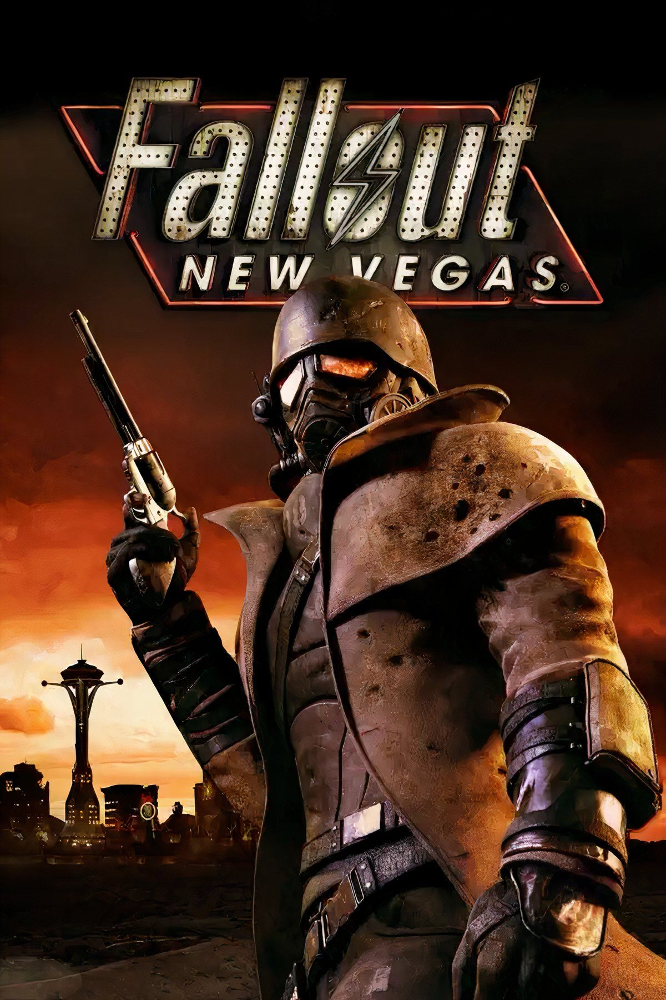
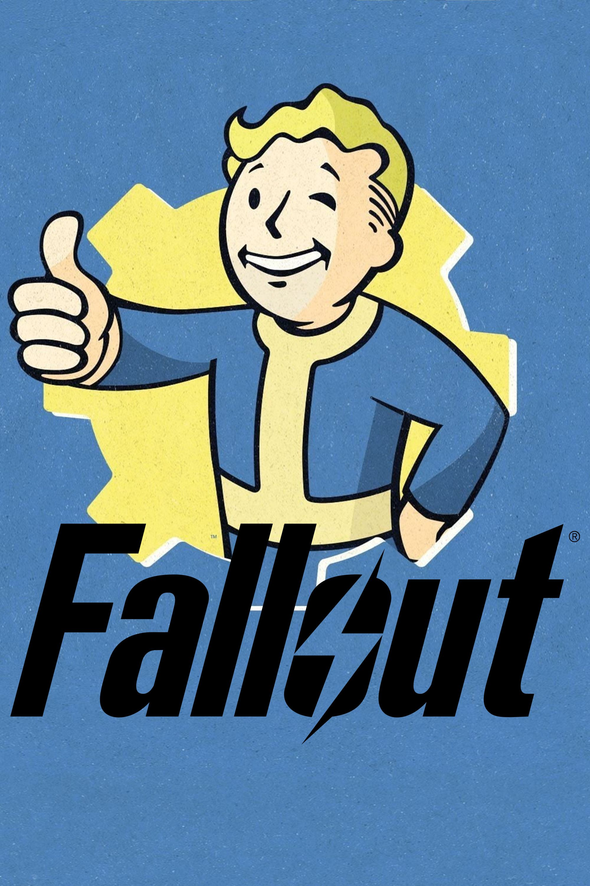
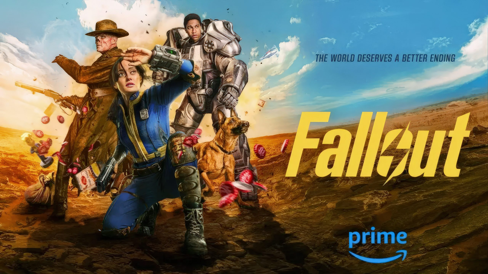
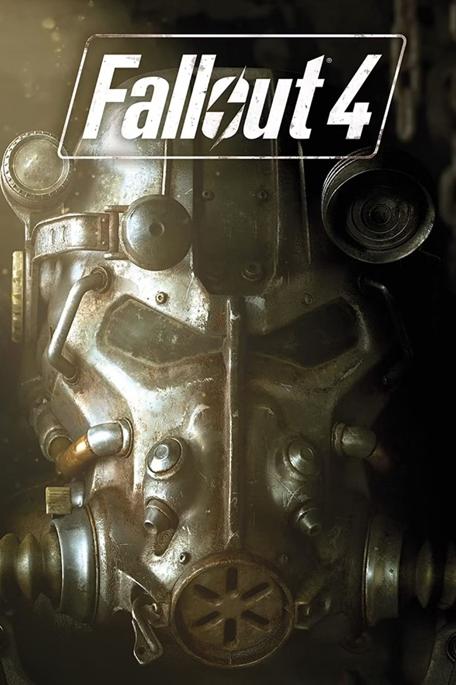
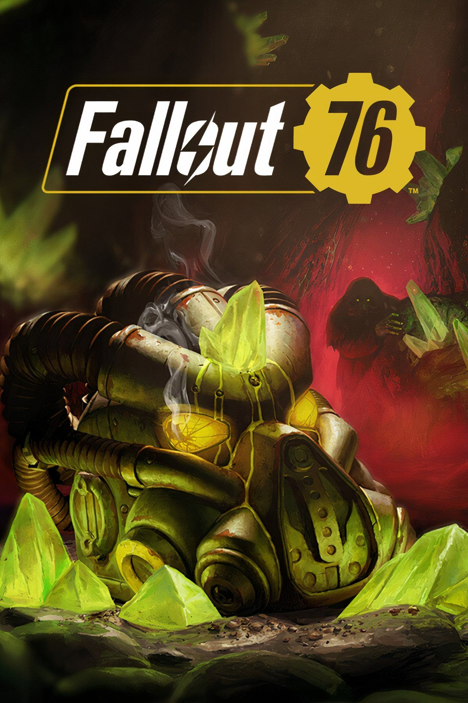

FALLOUT: NEW VEGAS
Explore the Mojave Wasteland and become caught between competing factions fighting for control of New Vegas. Your decisions can dramatically change the story.

> SYSTEM ONLINE...
> VAULT-TEC DATABASE CONNECTED
> WELCOME, WASTELANDER.

Fallout is a television adaptation set in the post-apocalyptic Fallout universe. The story takes place around 200 years after a nuclear apocalypse and follows survivors emerging from underground Vaults into a dangerous wasteland.
The first season follows Lucy, a resident of Vault 33, as she leaves the safety of her Vault and encounters the brutal world above. The series features Vault-Tec, the Brotherhood of Steel, Ghouls and many of the factions and themes that define Fallout.
> STATUS: WASTELAND ACTIVE
> VAULTS: OPERATIONAL
> SURVIVAL PROBABILITY: LOW

Explore the Mojave Wasteland and become caught between competing factions fighting for control of New Vegas. Your decisions can dramatically change the story.

Emerge from Vault 111 and explore the Commonwealth. Build settlements, modify weapons and armor, recruit companions and decide the future of the region.

Explore Appalachia decades after the bombs fell. Build camps, complete quests and survive the wasteland with other players.
Other major entries include Fallout, Fallout 2, Fallout 3 and Fallout Shelter. Each game presents its own interpretation of the post-nuclear United States.

TheDoctor200 is a developer with interests in Python, web development and backend APIs.
Their public GitHub profile includes projects involving Python, JavaScript, HTML, CSS and game-related software.
> USER: TheDoctor200
> ROLE: DEVELOPER
> SPECIALIZATION: PYTHON / WEB DEVELOPMENT
A project focused on a simple implementation of Visual Intelligence and AI.
[ OPEN REPOSITORY ]An unofficial Python launcher project for Minecraft Dungeons with offline-play functionality.
[ OPEN REPOSITORY ]A launcher project for Halo Wars 2 focused on installing and updating the Nuphillion Mod.
[ OPEN REPOSITORY ]TheDoctor200's public profile combines programming and gaming interests, with Python, JavaScript, HTML and CSS among the technologies represented in their projects.